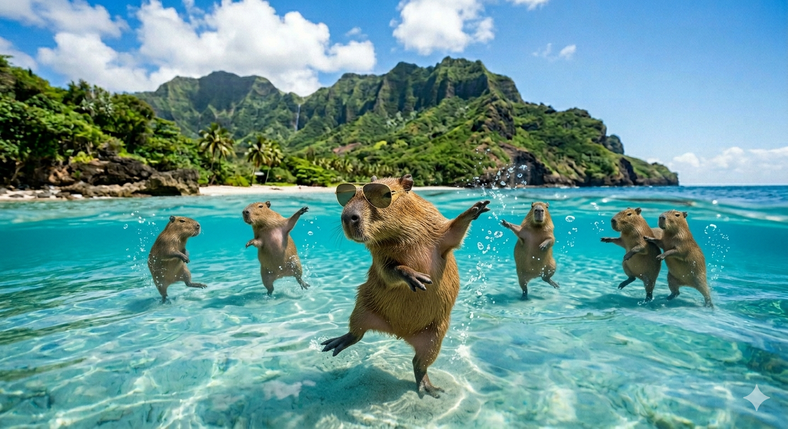

dieses Bild wurde mit Nano Banana2 von Google generiert

KLEINER TEXT:
Capybaras sind die unangefochtenen Zen-Meister des Tierreichs. Mit einem Gewicht von bis zu 65 Kilogramm ist Hydrochoerus hydrochaeris das größte Nagetier der Erde – im Grunde ein Meerschweinchen im SUV-Format. Wissenschaftlich gesehen sind sie semi-aquatische Spezialisten: Dank ihrer Schwimmhäute und der strategisch günstig auf dem Kopf platzierten Sinnesorgane navigieren sie mühelos durch südamerikanische Feuchtgebiete. Ihr wahrer Geniestreich ist jedoch ihre interspezifische Diplomatie. Capybaras fungieren als „lebende Möbel“ für Vögel und Affen, was ihnen den Ruf des freundlichsten Nachbarn im Dschungel einbrachte. Trotz ihres stoischen Auftretens sind sie hochsoziale Lebende, deren einzige Schwäche ihre Vorliebe für Koprophagie ist – eine etwas unappetitliche, aber effiziente Methode zur Nährstoffoptimierung. Ein faszinierendes Beispiel für maximale Gelassenheit unter evolutionärem Druck.
CLICK HERE FOR MORE CAPYBARA